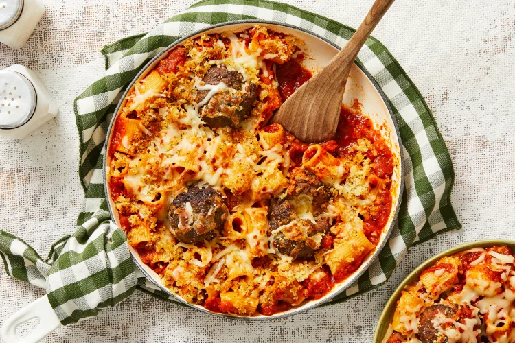

Stuffed Meatball Rigatoni

Description
Cheese stuffed meatballs, delicious baked rigatoni. Doesn't get much better than this!
Ingredients
- 20 ounce ground beef
- 12 ounce rigatoni pasta
- 28 oz marinara sauce
- 1/2 cup parmesan cheese, shredded
- 1 cup mozzarella cheese, shredded
- 1 cup panko breadcrumbs
- 2 tbsp tuscan heat spice
- 1 tsp oil
- 2 tsp sugar
- 4 tbsp butter
Steps
- Preheat oven to 400 degrees F. Bring large pot of salted water to a boil and cook rigatoni according to package
- Soak half the panko with 3 tbsp water
- Add beef, half the tuscan spice, 1 1/2 tsp salt, and pepper to bowl with the breadcrumbs, then mix and seperate in to 8 3 inch wide rounds. Use half the mozzarella to stuff meatballs and then gently fold together
- Lightly oil baking sheet, spread meatballs out and bake on middle rack until cooked through, about 20-22 minutes, then remove from heat and turn broiler to high
- Once rigatoni is finished cooking, reserve 1 cup pasta water and then drain and set aside
- Melt 2 tbsp butter in microwave and then mix remaining panko, 1/2 tsp heat spice, salt and pepper
- Once meatballs and pasta are done, heat large oven-proof pan over medium high heat, stir in marinara, remianing spice, 3/4 cup reserved pasta water, 2 tsp sugar, 1 tsp salt. Bring to a simmer and cook until slightly thickened, 3-4 minutes. Remove from heat and stir in 2 tbsp butter. Generously season with salt and pepper
- Stir in drained rigatoni and meatballs. Top with parmesan, remaining mozzarella, and panko mixture. Broil until golden brown, 1-2 minutes